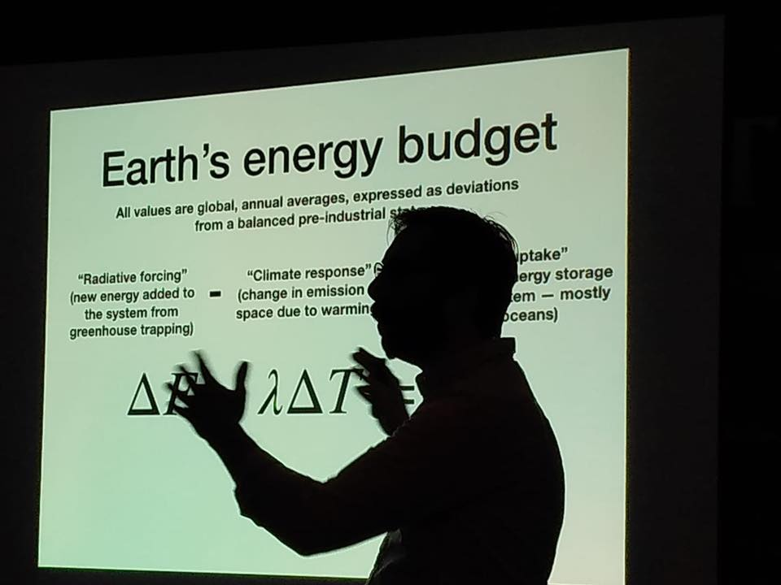

Posts tagged talks
Public talk about climate sensitivity
- 03 October 2018
Brian gave a science talk at a bar!
“Climate Sensitivity in an Uncertain World” occurred on the evening of October 2, 2018 at Slidin’ Dirty in Schenectady NY. This was a special Science on Tap event coinciding with the MiSci Science Festival.
Rose group @ AGU!
- 08 December 2017
Our climate dynamics group will be traveling in New Orleans next week to share some recent research and catch up with all our colleagues at the AGU Fall Meeting 2017!
Here are abstract numbers and links for all our contributions:
Our group goes to AGU!
- 11 December 2015
Our climate dynamics group will shortly be traveling to San Francisco to share some recent research and catch up with all our colleagues at the AGU Fall Meeting 2015!
Here are abstract numbers and links for all our contributions:
Public lecture at MCLA
- 29 January 2015
I gave an invited public lecture on the fundamental science of climate change at the Massachusetts College of Liberal Arts: “What Sets the Temperature of the Earth?”. This was part of MCLA’s Green Living Seminar Series. A podcast of my talk is available here.